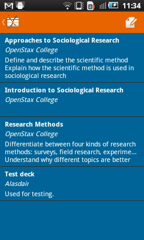
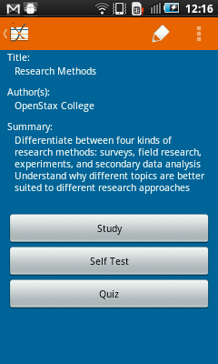
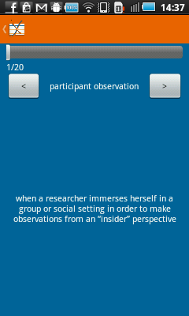
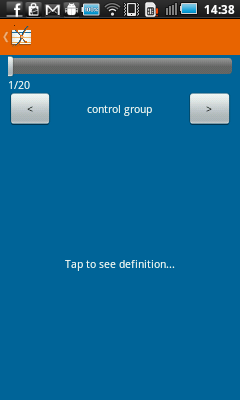
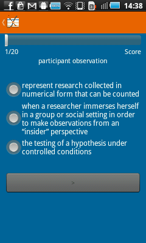
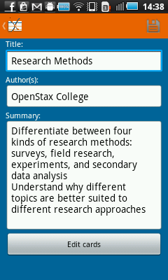
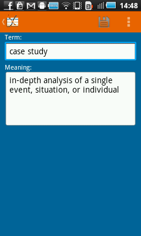

Welcome to QuizCards! QuizCards is an open-source flash cards and quiz app developed by Connexions. Connexions is an online repository of free textbooks and other eductional material, licensed under the Creative Commons attribution license.
Main menu
 From the main menu, you can search Connexions for chapters, access your
existing decks of cards, or access this help screen.
From the main menu, you can search Connexions for chapters, access your
existing decks of cards, or access this help screen.
Search
 When you search, the results will appear like this. You can
change and refine your initial search at the top and go between pages
of search results using the controls at the bottom.
When you search, the results will appear like this. You can
change and refine your initial search at the top and go between pages
of search results using the controls at the bottom.
Each search result shows the name, author, and web address of a chapter
on Connexions. Tap a search result to try downloading the chapter. If
the chapter has a glossary that can be made into flash cards, it will
be downloaded and added to your list of decks.
Your decks
 Select
"My Decks" from the main menu to view all the decks of flash cards you
have stored on your device. Tap the icon in the top right to create a
new deck or select a deck from the list to view and edit it.
Deck details

Once you download a chapter or select one of your existing decks,
you'll see this screen with further information and options. To edit or
delete the deck, use the options in the ActionBar in the upper right.
The "Study", "Self Test", and "Quiz" buttons let you go through the
flash cards in different ways.
Study mode
In study mode, you'll see both the term and meaning on the card so that you can learn the definitions. Tap the left and right arrow buttons or swipe across the screen to switch between cards.
Self Test mode
In self test mode, the meanings are hidden until you tap the screen to reveal them. Tap the left and right arrow buttons or swipe across the screen to switch between cards.
Quiz mode
In
quiz mode, you're given a term and then have to choose the correct
meaning from three possible options. Tap the right arrow button after
you've selected an answer to go to the next card. This mode is only
available if the deck has three or more cards.
Editing a deck
This
screen is used for editing an existing or newly created deck of flash
cards. You can change the title, authors, and its summary. Click "Edit
cards" to see a list of cards in the deck and edit or add to them.
Press the save icon in the ActionBar to save your changes.
Editing a card
This
screen is used for editing the terms and meanings on cards in a deck.
Press the save icon to save your changes or choose "Delete" from the
menu to delete a card.